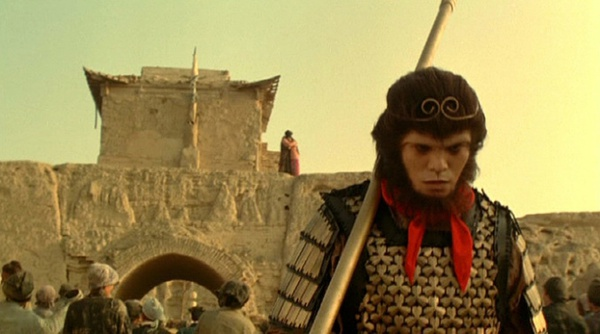

大话西游
第15回

（悟空醒来时发现身在水帘洞中，过去的经历恍如一梦，正惊疑间见八戒和沙僧走了过来。）
八戒：大师兄，这么早就起来了！
悟空：发生了什么事？
八戒：你都忘记啦？昨天晚上碰上一场大风沙，你把我们带到这里来的啦！
（这时唐僧走过来。）
唐僧：走！
悟空：上哪儿去啊师傅？
唐僧：天竺！（率先出洞）
悟空：师傅怎么这么说话？
八戒：师傅说话一向简单明了！走啦！
（悟空见时过境迁，如今师徒四人齐心取经，也很欣慰。）
（悟空正待出洞，突然一群游客走了进来，前面的导游正是转世的强盗菩提。）
导游：相传五百年前这里就是水帘洞、齐天大圣住的地方，自从他打死牛魔王救回唐僧之后这个世界再也没有妖怪了，从此以后很多人来这儿混水摸鱼。喏,
那个家伙装着个猪头居然说自己是猪八戒！哇！大哥，你化这个妆就说自己是孙悟空喽？给点儿专业精神好不好？你看，那些毛通通都开叉了，头上象戴了两块年糕似的，出来混饭吃得花点本钱嘛！看什么看，你的妆是恶心嘛！生我气我也这么说！
悟空：我不会生气的，再给我三刀吧！
导游：你以为我不敢啊？你这个混蛋！（用手在悟空胸前砍了三下）
悟空：多谢！（转身出洞）
导游：他为什么要我给他三刀呢？
（悟空出洞一看，洞口写着"菩提洞"三个字。）
（街边，转世的春三十娘和白晶晶在卖豆腐，这时她们的相公考中状元衣锦还乡，却是转世的二当家，而状元的随从是转世的瞎子。）
（师徒四人出城，见城门口围着好多人。）
唐僧：悟空！
悟空：什么事师傅？
唐僧：看看！
悟空：是！师傅！
（悟空来到城下，见城楼上站着一男一女。）
旁观者：这两个人站在上面已经三天三夜了都没下来……
旁观者：俩口子吵架吧……
（离悟空较近的几个人一见悟空的模样吓得跑了。）
男子：看来我不应该来！
女子：现在才知道太晚了！
男子：留下点回忆行不行？
女子：我不要回忆！要的话留下你的人！
男子：那样只是得到我的肉体，并不能得到我的灵魂。我已经有爱人了，我们不会有结果的。你让我走吧！
女子：好！我让你走可以，不过临走前你要亲我一下！
旁观者：亲她！亲她！
男子：我怎么说也是个西洋武士，你叫我亲我就亲，那我的形象不是全毁了！
女子：你说谎！你不敢亲我因为你还喜欢我。我告诉你，如果这次你拒绝我的话，你会后悔一辈子的！
男子：后悔我也不会亲！只能怪相逢恨晚，造物弄人！
（女子眼中流露出的凄然欲绝的眼神令悟空心中一阵刺痛，他吹起一阵风沙迷住众人的眼睛，趁机飞入男子的体内。）
（男子突然间全身一震，抬起头来，将怀中的宝剑一抛，大踏步走过去将女子搂在怀里深深一吻。）
男子：我这辈子都不会走！我爱－－你！
（女子惊喜万分，两人紧紧地拥抱在一起。）
（城下围观的人群一起鼓掌欢呼。）
（男子突然浑身一震清醒过来，发觉女子伏在自己怀中，不禁一愣，等看到女子脸上幸福的表情和听到众人的欢呼，才明白自己终于还是亲了女子，虽然有些莫名其妙，但是也感到十分高兴。）
（这时悟空最后望了一眼终成眷属的恋人，转身隐没在人群中。他的背影被女子注意到了。）
男子：干什么？
女子：那个人样子好怪啊！
男子：我也看到了，他好象条狗啊！
（女子笑着依偎在男子怀中，仍目不转睛地盯着那个远去的背影，似乎有几分惆怅。）
（悟空低着头缓缓走了一会儿，突然洒脱地昂起头挺起胸，将金箍棒架在肩上，大踏步而去。）
（远方，唐僧骑着白马，八戒举着钉耙，沙僧扛着行李，悟空吃着香蕉，师徒四人西行取经去了。）